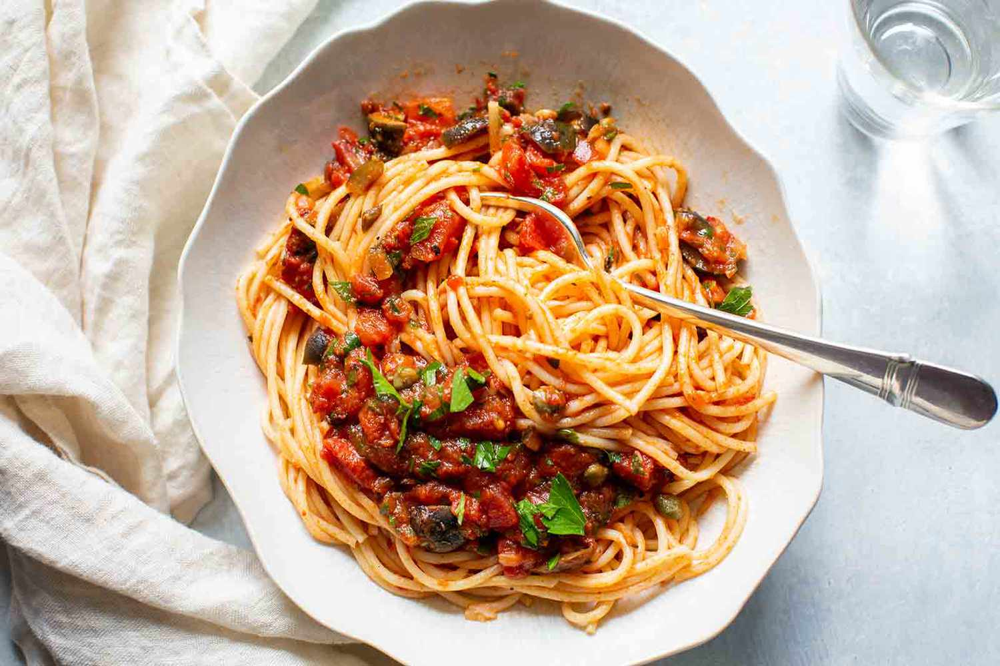

| Ingredients |
|---|
| 1 pound ground beef |
| 1 onion, chopped |
| 4 cloves garlic, minced |
| 1 can diced tomatoes |
| 1 can tomato sauce |
Step 1: Combine pround beef, onion, garlice, and green pepper in a
largesaucepan. Cook nad stir until meat is brown and vegetables are
tender. Drain grease.
Step 2: Stir diced tomatoes, tomato sauce, and tomato pasta into the
pan. seasion with oregano, basil, salt, and pepper. simmer spaghetti
sauce for 1 houre, stiring occasionally.